Inventory
La funzionalità di inventario raccoglie i metadati degli asset installati all’interno di tutti i provider presenti sulla SCMP.
-
Gli asset attualmente presenti sono:
-
Virtual Machine
-
Data Stores
-
Networks
-
Kubernetes
-
Security
-
Others
-
What If
-
Reports
I metadati eterogenei, provenienti da diverse fonti vengono poi normalizzati dalla SCMP per permettere una visualizzazione standard.
L’inventario è accessibile dalla voce di menu “Inventory”. Come mostrato in figura.
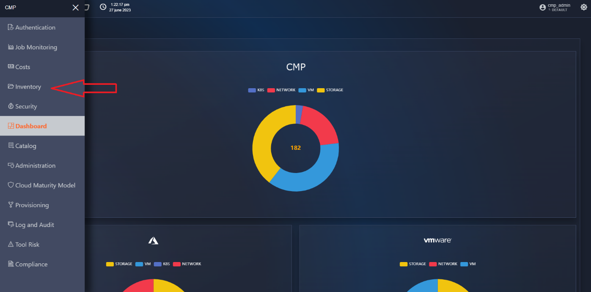
Figura 91 - Accesso a Inventory
Dashboard di inventario
La pagina Dashboard permette di avere una visione globale e aggregata di tutte le risorse, mentre i menu sopra il path del breadcrumb danno la possibilità di filtrare per tipologia di risorsa. () le funzionalità disponibli nelle varie pagine sono identiche tra loro
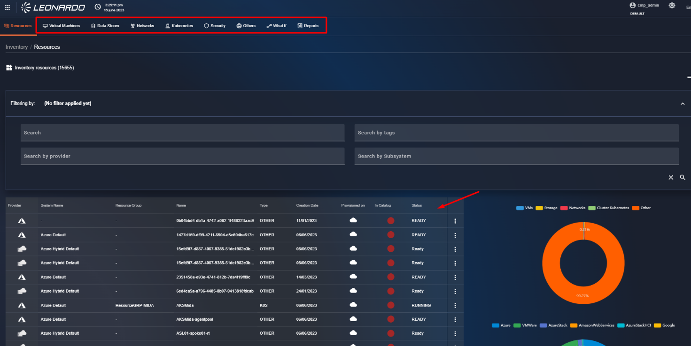
Figura 92 – Dahsboard di inventario
.
All’interno della pagina del tab “Resources”, sono presenti dei filtri, nel primo filtro in alto è possibile inserire la ricerca delle risorse in base al nome, al gruppo di risorse, provider, ecc., viene reso possibile inoltre di filtrare le risorse per “Provider” e “Subsystem”.
L’ultimo filtro permette la ricerca tramite tag. Cliccare su di esso e selezionare un tag, infine cliccando sul pulsante che raffigura una lente d’ingrandimento la pagina si aggiorna e si ottiene la lista delle risorse filtrate.
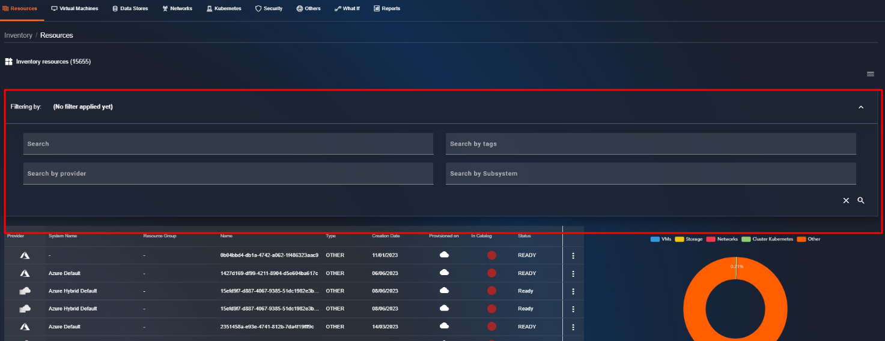
Figura 93 - Ricerca generica, per tag, per Provider e Subsystem
È possibile, inoltre, cliccare sui grafici per applicare automaticamente i relativi filtri.
Visualizzazione dettaglio risorsa
Per visualizzare il dettaglio di una risorsa, si può cliccare come in figura:
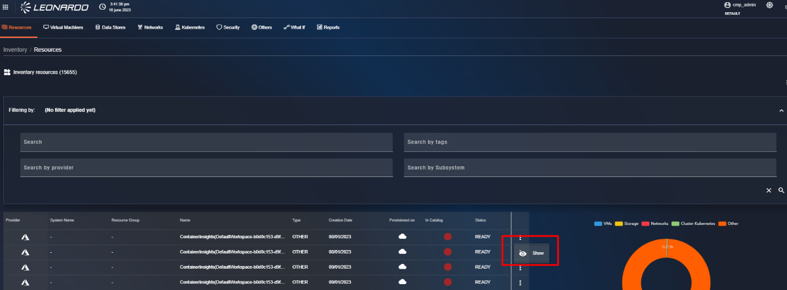
Figura 94 - Accesso alla risorsa in modalità lettura
Il dettaglio di un asset di inventario mostra in alto le caratteristiche principali come costo mensile, size della macchina e link esterno alla risorsa che punta al provider di riferimento.
Di seguito la visualizzazione dei dettagli di una VM:
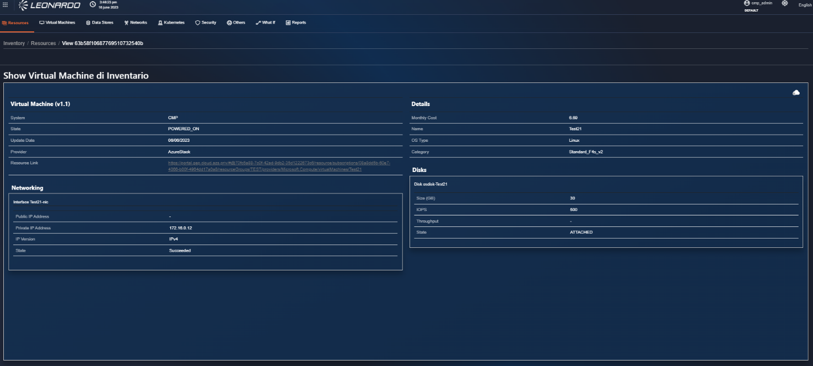
Figura 95 - Dettaglio risorsa
E in calce le relazioni dell’asset con altri elementi di SCMP, come mostrato in figura:
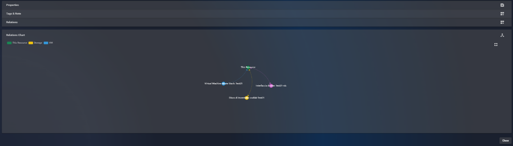
Figura 96 - Grafico delle relazioni
Il grafico delle relazioni permette di navigare tra le risorse cliccando direttamente sul tondino della risorsa concatenata in relazione, al fine di atterrare sul dettaglio di quest’ultima.
Inoltre, è possibile editare alcuni attributi, come ad esempio i tags, come da figura ():
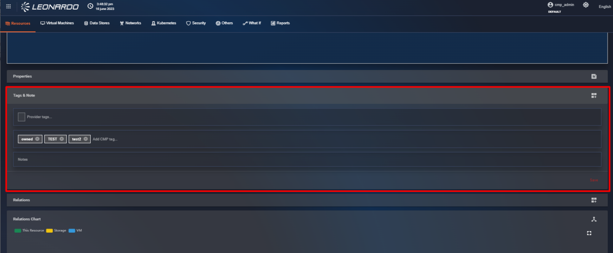
Figura 97 - Selezione del tag
Per il campo “Provider Tags…” non è possibile selezionare un tag, in quanto i tag in questa sezione vengono recuperati direttamente dal sottosistema
Il campo “Add SCMP Tag…” permette di selezionare da un elenco o inserirne uno manualmente. All’interno del tag è presente il simbolo “X” per eliminare il suddetto.
È possibile inserire più tag per la risorsa.
Successivamente, in basso a destra della sezione “Tags & Note”, cliccare sul pulsante “Save” per salvare la modifica ed apparirà un banner in basso di avvenuto salvataggio del tag.
Scorrere la pagina verso il fondo, e cliccare sul pulsante “Close” posizionato a destra per tornare nella pagina del tab “Dashboard”.
Azioni sulle macchine di inventario
Sempre dalla pagina del dettaglio della risorsa è possibile effettuare le seguenti operazioni utilizzando il menu in alto nella pagina:
-
Avvio della macchina
-
Stop della macchina
-
Ridimensionamento della macchina
-
Aggiunta di dischi di memoria
-
Aggiunta di un interfaccia di rete
-
Eliminazione della risorsa
-
Rimozione del disco nella risorsa
-
Rimozione di un interfaccia di rete
Le operazioni disponibili sono diverse per ogni provider e sono indicate in bianco quando possono essere eseguite e in grigio quando non sono supportate o non disponibili.
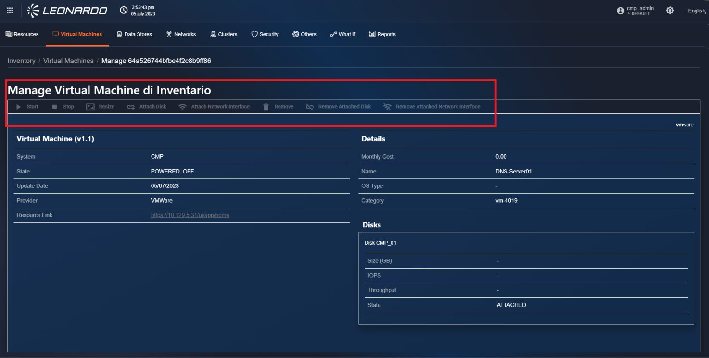
Figura 98 - Accesso al report di Inventory
Funzionalità di “Cluster explorer”
Il Cluster Explorer è una funzionalità potente che consente agli utenti di visualizzare in modo dettagliato i namespace all'interno di un cluster. Questa funzione offre una panoramica completa dell'organizzazione dei dati e delle risorse all'interno del cluster, facilitando la navigazione e la gestione di ambienti complessi.
Con Cluster Explorer, gli utenti possono:
-
Visualizzare l'elenco completo dei namespace in un cluster: Ottenere una rapida panoramica di tutti i namespace disponibili nel cluster.
-
Esaminare i dettagli di ogni namespace: Accedere a informazioni complete su ciascun namespace, tra cui nome, descrizione, etichette e quote di risorse.
-
Filtrare e cercare i namespace: Trovare rapidamente i namespace specifici utilizzando criteri di filtro e ricerca avanzati.
Per accedere alla funzionalità bisogna selezionare dal menù orizzontale del modulo di Inventario, la voce “Clusters” (Figura 99)
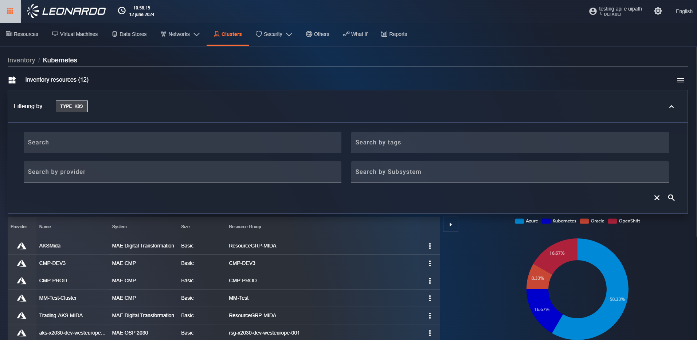
Figura - Accesso alla funzionalità di cluster explorer
All’ interno della pagina verrà visualizzata la lista dei cluster presenti all’ interno dei sottosistemi configurati nel sistema, cliccando su uno di essi si aprirà una modale con i dettagli generali del cluster(Figura 100)
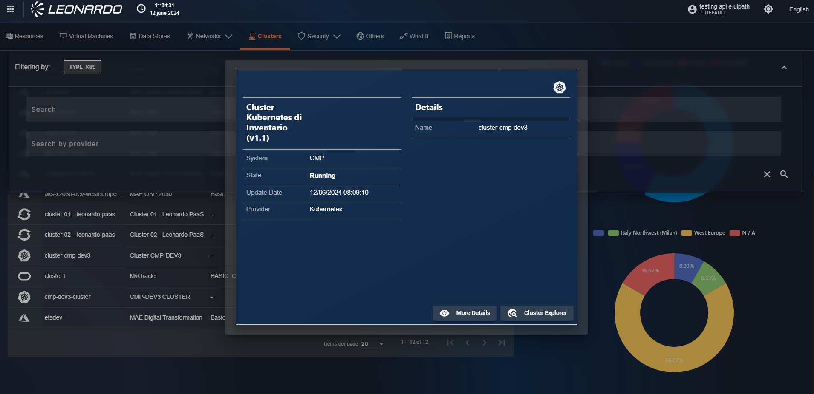
Figura - Finestra di dettaglio del cluster
Possiamo notare che in basso a destra è presente un pulsante “cluster explorer” premendolo verremo reindirizzati alla dashboard del cluster (Figura 101) è possibile accedere a questa pagina anche utilizzando il pulsante “cluster exploer” disponibile nel menu contestuale “tre punti” presente per ogni cluster nella lista di risultati.
All’ interno di questa pagina possiamo visualizzare un grafico che rappresenta la distribuzione dei namespace all’ interno del cluster, sulla destra viene visualizzata la leggenda dei namespace con il numero di pod attivi.
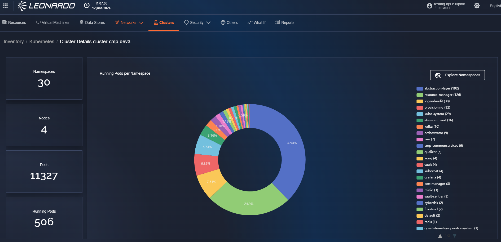
Figura 101 - Dashboard del “cluster explorer”
Possiamo scendere nel dettaglio dei namespace utilizzando diversi componenti nella pagina:
è possibile cliccare sul pulsante in alto a destra “Explore namespaces” o cliccare sul numero di namespace visualizzato in alto a sinistra per visualizzare la pagina di esplorazione dei namespace senza filtri (Figura 102), se vogliamo visualizzare direttamente il dettaglio di un namespace presente nel grafico è possibile cliccare sulla relativa fetta e la pagina di dettaglio verrà filtrata automaticamente per namespace selezionato (Figura 103)
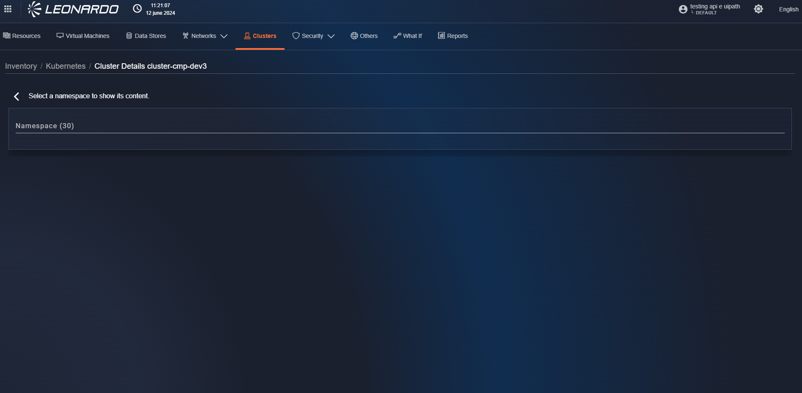
Figura - Pagina "Namespace explorer"
Il campo namespaces presente in alto permette di effettuare una ricerca tra i cluster disponibili inserendo un testo libero, se viene trovata una corrispondenza è possibile selezionare il namespace dalla lista così da visualizzarne il dettaglio (Figura 104)
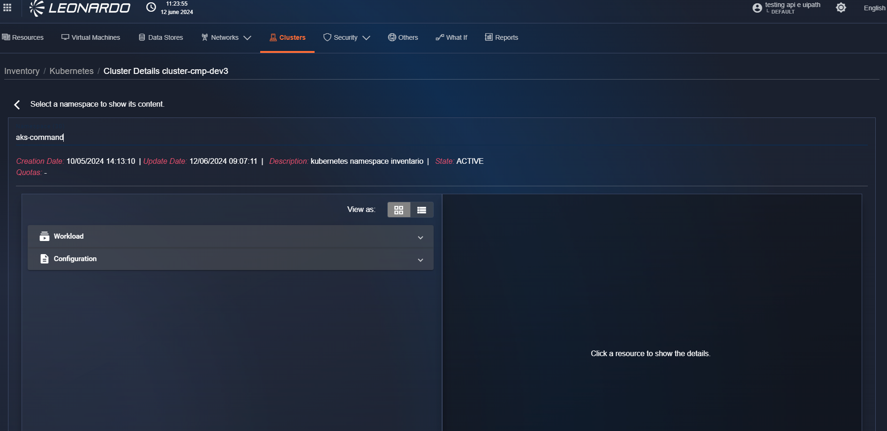
Figura - Dettaglio dei namespace
Utilizzando i comandi “Freccia in basso” sarà possibile navigare tra le categorie e sottocategorie di elementi disponibili, infine selezionando un risultato sarà possibile visualizzarne i dettagli nella sezione destra della pagina, che verrà popolata automaticamente con il risultato selezionato sulla sinistra (Figura 104)
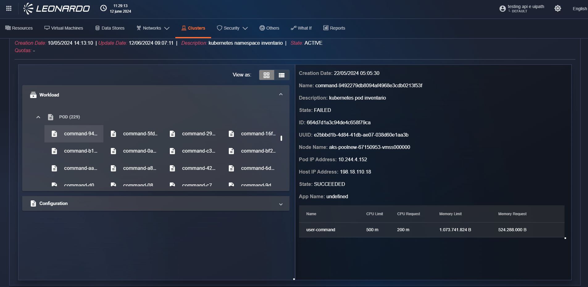
Figura - Dettagli del contenuto del namespace
Funzionalità “WHAT IF”
Questa funzionalità permette di eseguire delle simulazioni per la migrazione degli asset da un provider a un altro, o all’ interno dello stesso provider in modo da poter confrontare i costi di gestione e mantenimento.
Per eseguire una simulazione , cliccare sopra il path del breadcrumb il tab che raffigura una relazione che collega due entità denominato ‘What If’ (Figura 105).
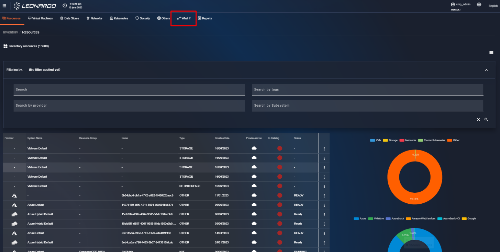
Figura 105 - Accesso a “What If”
Dopo aver fatto ciò, ci si ritrova all’interno della pagina del tab “What If” (Figura 106).
Possiamo notare sopra la lista delle simulazioni, sulla destra, due tab che permettono di filtrare la lista per tipologia di simulazione , nello specifico:
All’ apertura della pagina verranno visualizzate tutte le simulazioni di tipo “Change Provider” mentre cliccando sul tab “Capacity” sarà possibile visualizzare la lista delle simulazioni di tipo “Change size”
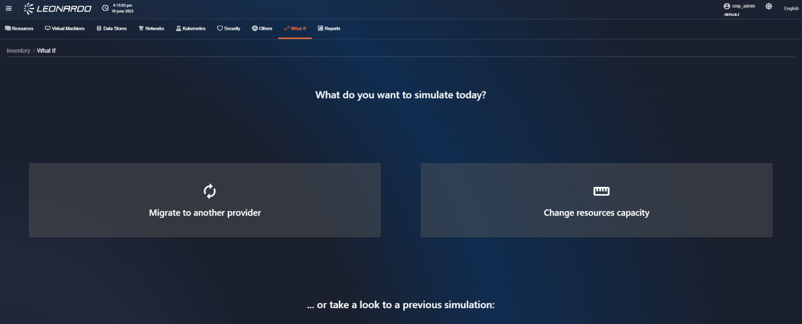

Figura 106 - Pagina di “What If”
Scenario “What If”: Provider Migration
Per effettuare una simulazione del “What If: Migrate Provider”, cliccare nel riquadro a sinistra intitolato “Migrate to another provider” (Figura 107).
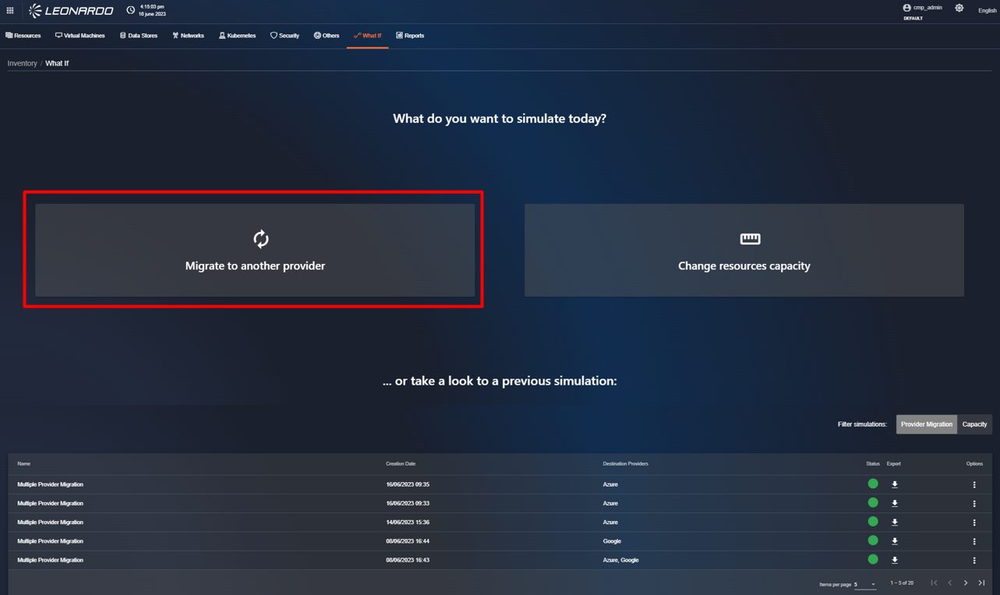
Figura 107 - Accesso alla funzionalità "What If: Migrate Provider"
Dopo aver fatto ciò, l’utente si ritrova all’interno della pagina “Start” dello step 1 per la simulazione della migrazione delle risorse da un cloud provider ad un altro (Figura 108).
A sinistra nel riquadro “Select Resources to migrate”, l’utente può ricercare le risorse tramite tre tipi di filtri tra cui:
-
“Search” che consente di cercare una risorsa per nome;
-
“Search by Type” di ottenere le risorse tramite la selezione del tipo di risorsa;
-
“Search by tags” che consente di ricercare le risorse tramite uno o più tag
All’interno della tabella delle risorse verranno visualizzate solo risorse che abbiano una relazione nel catalogo (5.9.1.1)
All’interno della tabella delle risorse, cliccare su una di essa e tramite la tecnica del “drag and drop”, trascinarla a destra, all’interno nel riquadro intitolato “Currently selected ”.
È possibile inserire un numero massimo di tre risorse per simulazione.
Successivamente, in basso a destra, cliccare sul pulsante “Next”.
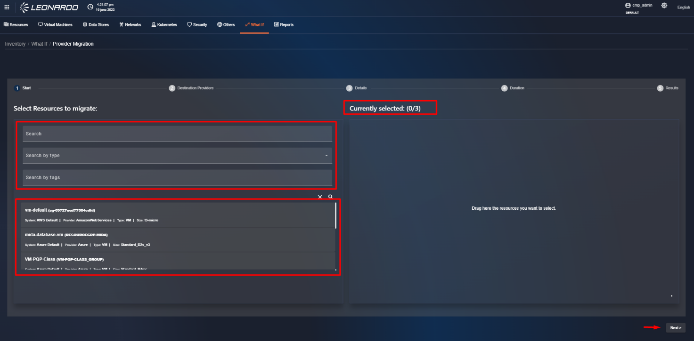
Figura 108 - Scelta delle risorse in cui effettuare la migrazione del provider
Dopo aver fatto ciò, l’utente si ritrova all’interno della pagina “Destination Providers” dello step 2 in cui è possibile cliccare sul checkbox in corrispondenza di uno o più provider ove, in base al tipo di provider selezionato, verrà automaticamente compilato in basso a sinistra il valore nel campo ‘Option selected” con i nomi dei providers selezionati (Figura 109).
Successivamente, in basso a destra, cliccare sul pulsante “Next”, mentre per tornare alla pagina “Start” dello step 1, cliccare sul pulsante “Back”.
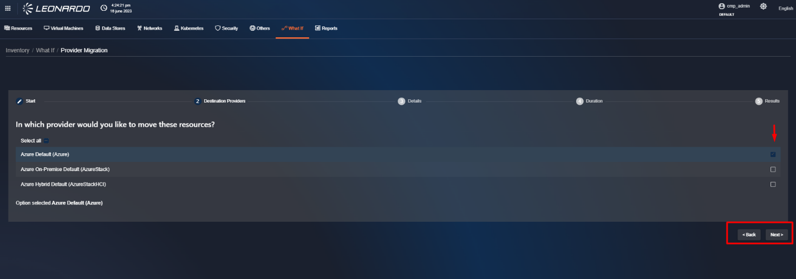
Figura 109 - Scelta del Cloud Provider in cui migrare le risorse
Dopo aver cliccato sul pulsante “Next”, l’utente si ritroverà all’interno della pagina dello step 3 intitolato “Details” (Figura 110).
In questa pagina verranno visualizzate delle card, rispettivamente una per sottosistema selezionato nello step 2.
In ogni card sono presenti, sulla sinistra, una lista di regioni disponibili per il cloud provider e sulla destra viene visualizzata una sezione vuota.
Selezionando una o più regioni nella sezione di destra (in rosso nella figura) verranno mostrati nella sezione di destra un menù che permette di selezionare la tipologia di costo da applicare ( in giallo nella figura). Selezionando la tipologia “Consumption” non sono richiesti ulteriori parametri , mentre selezionando la tipologia “Reservation” sulla sinistra del campo sara possibile scegliere il periodo della
Prenotazione ( in giallo nella figura)
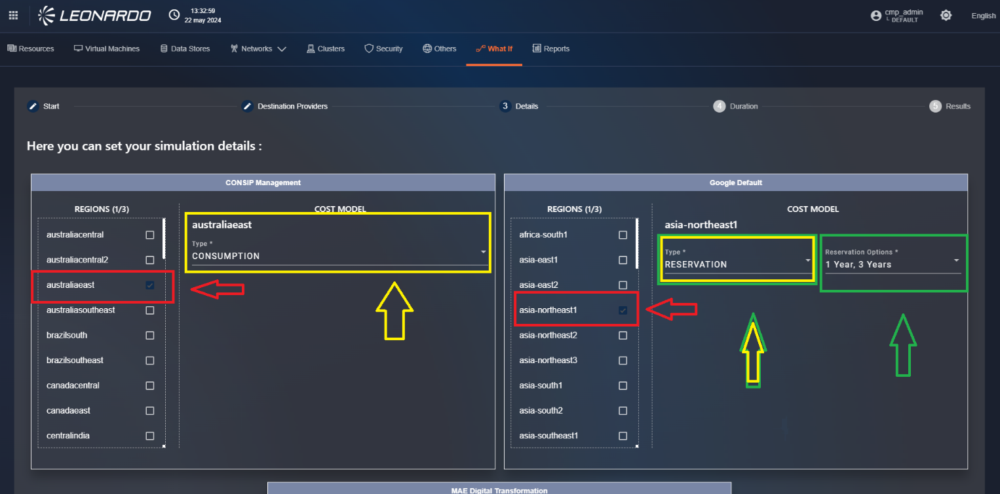
Figura 110 - Selezione della "Regione" e del "Cost Model"
Dopo aver cliccato sul pulsante “Next”, l’utente si ritroverà all’interno dello step 4 intitolato “Duration” (Figura 111).
Dalla pagina “Duration” dello step 4, selezionare un intervallo per la simulazione tra:
-
“One Month”
-
“Six Months”
-
“One Year”
Per tornare indietro alla pagina “Details”, in basso a destra, cliccare sul pulsante “Back”. Invece, per andare avanti con la simulazione, cliccare sul pulsante “Launch Simulation”.
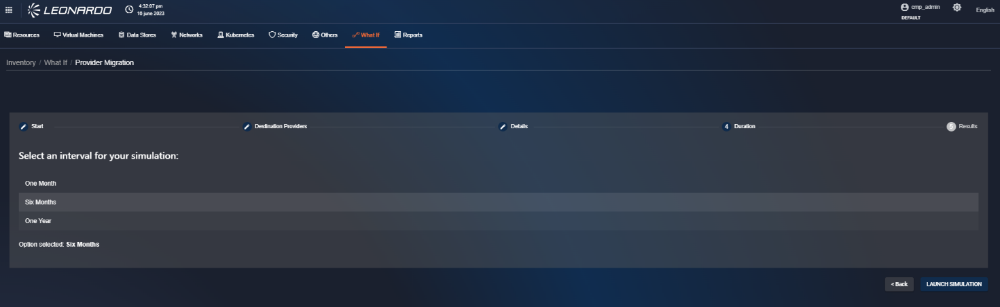
Figura 111 - Selezione dell'intervallo di tempo
Dopo aver cliccato sul pulsante “Launch Simulation”, l’utente si ritroverà all’interno della pagina “Results” dello step 5 (Figura 112).
All’interno della pagina “Results”, in alto, è possibile visualizzare il riquadro “Simulation parameters” che contiene un riepilogo dei parametri utilizzati. (in giallo nella figura)
Sotto il riquadro “Summary”,sono presenti diverse sezioni, una per provider di destinazione (in rosso nella figura) e all’ interno potremo visualizzare la lista delle risorse che possono essere migrate sul provider (in verde nella figura), cliccando su una di essere verrà visualizzato un grafico ad istogrammi () in questo grafico possiamo notare:
-
Una linea parallela all’ asse X che indica il costo attuale della risorsa
-
Una serie di barre (una per ogni regione e tipologia di costo selezionata) che avranno colore rosso quando il prezzo di destinazione è superiore a quello di partenza o verde quando il prezzo è inferiore al costo attuale della risorsa, passando il mouse su una di esse verrà visualizzato il suo riferimento.
-
Una tabella riassuntiva delle tipologie di costo selezionate, che viene utilizzata per generare il grafico a barre.
È possibile visualizzare i dettagli per le altre simulazioni (in viola nella figura )utilizzando la procedura appena descritta
Per uscire dalla simulazione senza salvare, in basso a destra, cliccare sul pulsante “Close”.
Per salvare la simulazione, cliccare sul pulsante “Save” accanto al pulsante “Close”, e poi cliccare su “Confirm”.
Dopo aver cliccato un pulsante, l’utente viene reindirizzato nella pagina del tab “What If”.

Figura 112 – Pagina dei risultati della simulazione WHAT IF
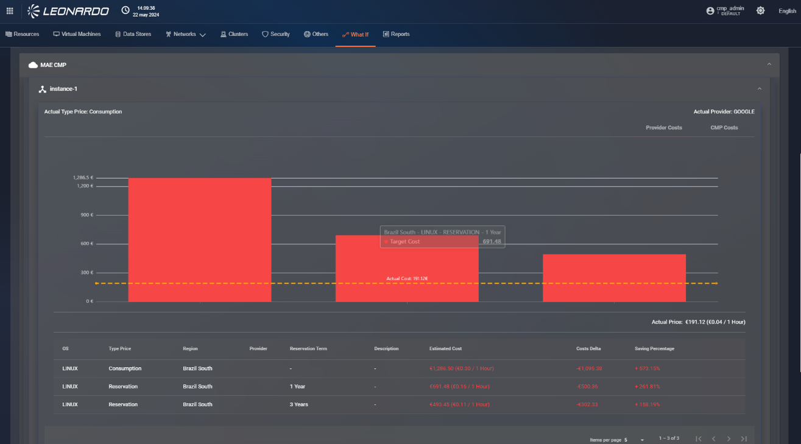
Figura 113 - Tabella riassuntiva della/e risorse
È possibile aggiornare e eseguire nuovamente una simulazione senza dover reinserire tutti i dati.
Per farlo cliccare in corrispondenza della riga da modificare, a questo punto l’utente verrà reindirizzato allo step 1 della simulazione, dove tutti gli step sono stati precompilati utilizzando i parametri salvati.(Figura 114)
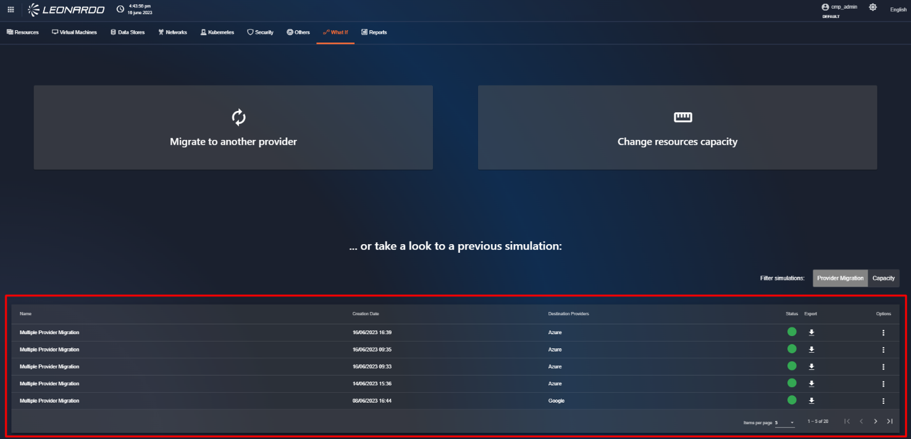
Figura 114 - Avvio per l'aggiornamento della simulazione di tipo "Migrate to another provider"
Scenario “What If”: Change Resource Capacity
Questa funzionalità permette di confrontare i costi di una risorsa in caso di modifica delle caratteristiche tecniche.
Sempre dalla pagina del tab “What If”, in alto a destra, cliccare sul riquadro “Change resources capacity “(Figura 115).
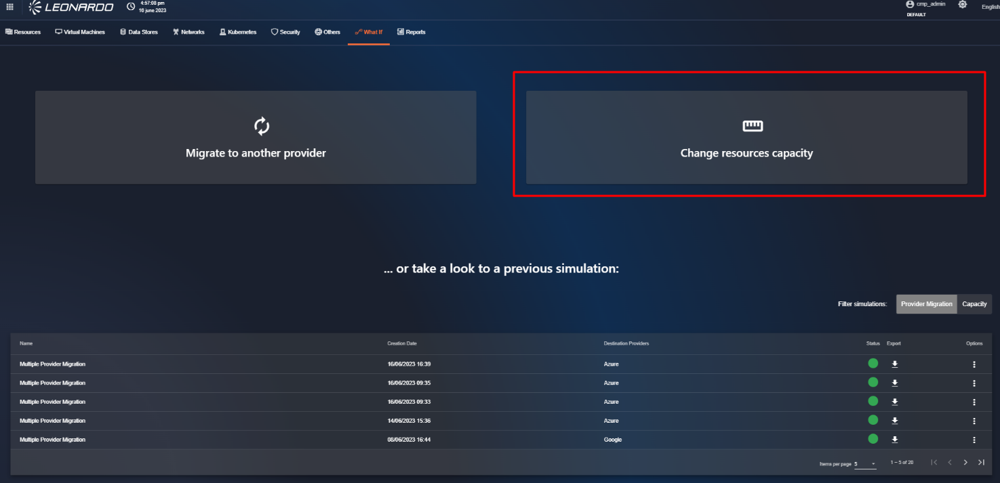
Figura 115 - Accesso alla funzionalità "What If: Change resources capacity"
Dopo aver fatto ciò, l’utente si ritroverà all’interno della pagina “Start” dello step 1 (Figura 116).
A sinistra nel riquadro “Select Resources to change”, l’utente può ricercare le risorse tramite tre tipi di filtri tra cui:
-
“Search” che consente di cercare una risorsa per nome;
-
“Search by Type” che consente di ottenere le risorse tramite la selezione del tipo di risorsa;
-
“Search by tags” che consente di ricercare le risorse tramite uno o più tag associato alle suddette
Nella tabella delle risorse verranno riportate solo risorse che, all’interno del catalogo SCMP, abbiamo più di una “Relazione” con size differenti ma appartenenti alla stessa regione, stesso tipo di prezzo e sistema operativo.
In basso a sinistra, è presente la tabella delle risorse, che può essere filtrata in base ai parametri inseriti nel o nei filtri. All’interno della tabella delle risorse, cliccare su una di essa e tramite la tecnica del “drag and drop”, trascinarla a destra, all’interno nel riquadro intitolato “Currently selected :”.
È possibile inserire un numero massimo di tre risorse per simulazione.
Successivamente, in basso a destra, cliccare sul pulsante “Next”.
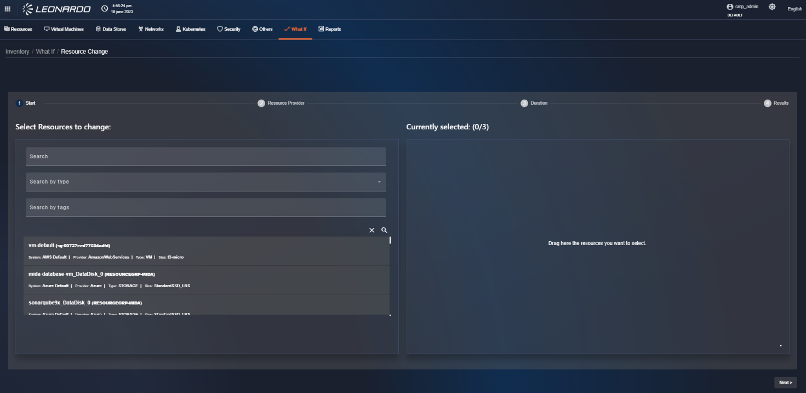
Figura 116 - Selezione delle risorse da cui modificare le capacità
Dopo aver fatto ciò, l’utente si ritrova all’interno della pagina “Resource Provider” dello step 2 in cui è possibile modificare la size di una o più risorse (Figura 117).
All’interno della pagina “Resource Provider” dello step 2, in corrispondenza di una risorsa, cliccare sul menu a tendina della colonna “Size” e selezionare una size diversa da quella iniziale.
Dopodiché, in basso a destra, cliccare sul pulsante “Next” per proseguire la simulazione.
Per tornare alla pagina “Start” dello step 1, cliccare sul pulsante “Back”.
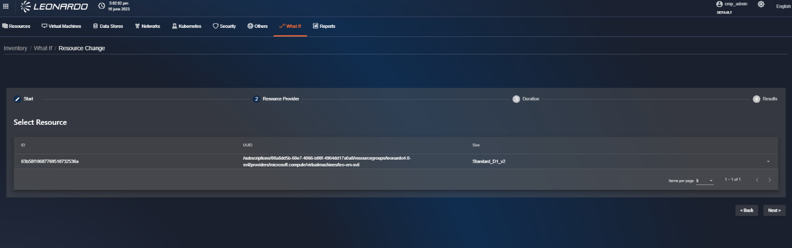
Figura 117 - Modifica della size di una risorsa
Dopo aver cliccato sul pulsante “Next”, l’utente si ritroverà all’interno della pagina “Duration” dello step 3 (Figura 118).
All’interno della suddetta pagina, è necessario selezionare un intervallo per la simulazione.
Dopodiché, in basso a destra, cliccare sul pulsante “Launch Simulation”.
Per tornare indietro, cliccare sul pulsante “Back”, in questo modo l’utente si ritrova all’interno della pagina “Resource Provider” dello step 2.

Figura 118 - Selezione dell'intervallo per la simulazione
Dopo aver cliccato sul pulsante “Launch Simulation”, l’utente si ritrova all’interno della pagina “Results dello step 4 (Figura 119).
All’interno della pagina “Results”, in alto è presente il riquadro “Summary” che consiglia se modificare la size delle risorse. Sotto, è presente un grafico di istogrammi, in cui la barra viola rappresenta i costi attuali, mentre la barra verde rappresenta i costi target.
Per salvare la simulazione, cliccare sul pulsante “Save” accanto al pulsante “Close”, e poi cliccare su “Confirm”. Fatto ciò, l’utente viene reindirizzato nella pagina di “What If”.
Per uscire dalla simulazione senza salvare la suddetta, in basso a destra, cliccare sul pulsante “Close”. Fatto ciò, l’utente si ritrova all’interno della pagina “What If”.
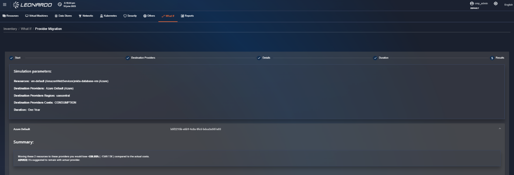 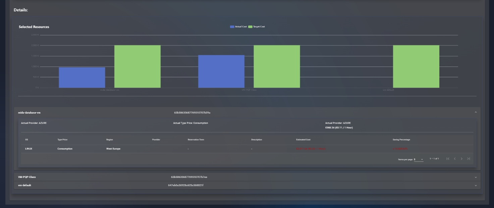
Figura 119 - Parametri di configurazione e consiglio sulla simulazione
Esportazione scenario What If
Per una simulazione della modifica di una size di una risorsa, è possibile esportare la suddetta in formato pdf, csv e json.
All’interno della pagina di “What If”, in basso è presente una tabella delle simulazioni, cliccare sul pulsante “Capacity” posizionato nell’angolo superiore destro della suddetta tabella.
Dopo aver fatto ciò, la tabella mostra le simulazioni sulla modifica della size delle risorse.
In corrispondenza di una simulazione, cliccare sul pulsante che raffigura una freccia.
A questo punto si aprirà un sottomenu in cui è possibile effettuare l’export nei tre formati precedentemente descritti (Figura 120).
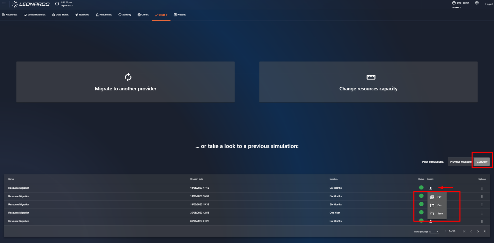
Figura 120 - Export della simulazione
Sempre per una simulazione è possibile effettuare la stampa della suddetta.
In corrispondenza di una simulazione, cliccare sul kebab menu, e a quel punto cliccare sull’opzione “Print” (Figura 121).
A questo punto, apparirà una modale dell’anteprima del documento da stampare. Infine, cliccare sul pulsante “Stampa” per avviare la stampa del documento.
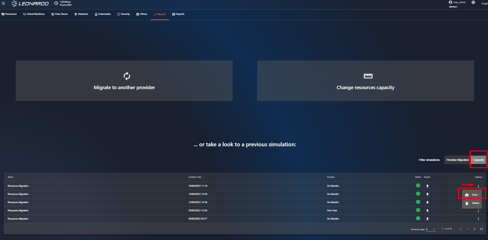
Figura 121 - Stampa della simulazione
In corrispondenza di una simulazione, cliccare sul kebab menu,
Dalla lista delle opzioni, cliccare su “Delete” (Figura 122).
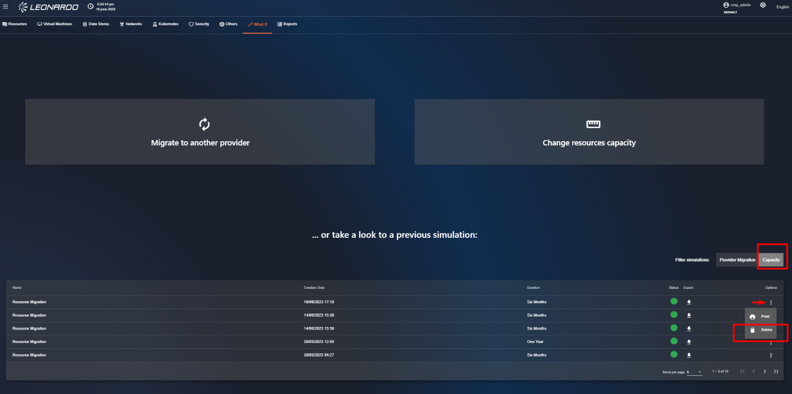
Figura 122 - Opzione per eliminare una simulazione
Dopo aver cliccare sull’opzione “Delete”, apparirà una modale in cui è necessario confermare l’eliminazione della simulazione cliccando sul pulsante “Confirm” (Figura 123).
Fatto ciò, la simulazione non è più presene all’interno della tabella.
Se invece non si vuole dare la conferma per l’eliminazione della simulazione, cliccare sul pulsante “Cancel”.
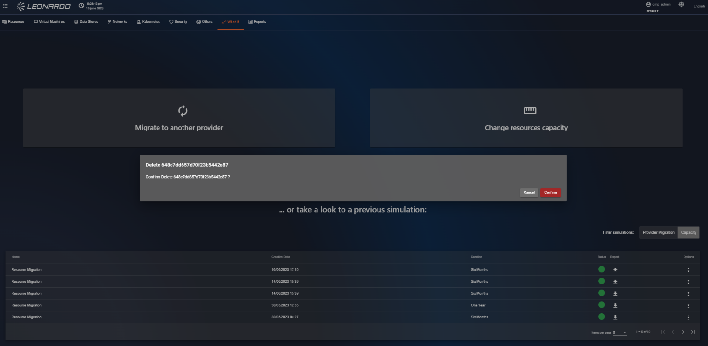
Figura 123 - Conferma dell'eliminazione della simulazione
Strumenti di reportistica
La funzionalità di reportistica, specifica per funzionalità, permette di generare dei report globali delle informazioni disponibili per i vari provider, all’ interno delle pagine verrà data anche la possibilità di creare dei file per facilitare la condivisione delle informazioni.
Per accedere alla funzionalità, sopra il path del breadcrumb, cliccare sul tab “Reports” (Figura 124).
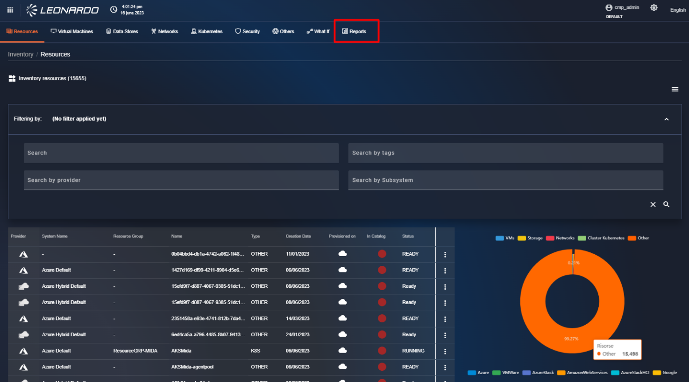
Figura 124 - Accesso al report di Inventory
Creazione di un report
In alto sulla destra della pagina possiamo cliccare sul pulsante “New Report” per avviare la creazione di un report , nello specifico viene visualizzata una modale che contiene la lista delle tipologie di report disponibili. (Figura 125)
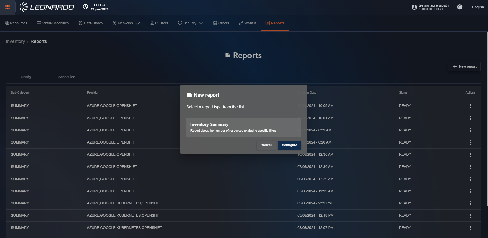
Figura - Creazione nuovo report
Una volta selezionata la tipologia di report cliccare sul pulsante “Configure” per selezionare i provider da includere nel report, nella finestra appena aperta troviamo il campo “Provider” che permette di selezionare uno o più provider preesistenti nel sistema, successivamente è possibile selezionare uno o più sottosistemi da includere nel report, se non vengono selezionati dei provider non sarà possibile selezione nessun sottosistema. Infine è presente una sezione “tag” per includere le sole risorse che presentano il tag inserito. (Figura 126)
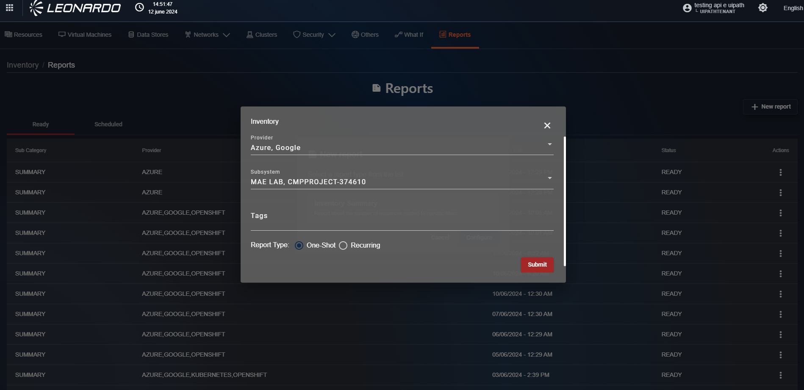
Figura – Configurazione del report
A questo punto l'utente può scegliere tra due diverse azioni:
-
Creare un report statico che verrà salvato nel sistema
-
Programmare una schedula che generi il report periodicamente
Per confermare la creazione di un report statico verificare che per il campo “Report type” sia stato selezionato “One-Shot” e cliccare il pulsante “Submit” presente in basso.
Dopo un periodo di caricamento sarà possibile visualizzare nella lista il report appena generato. (Figura 127)
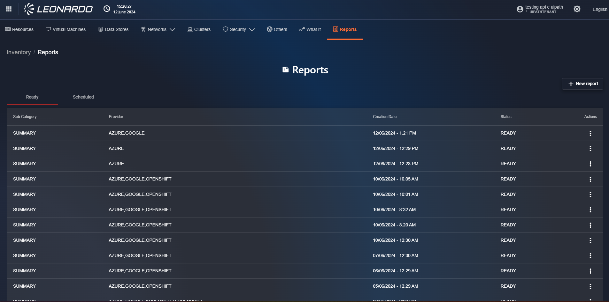
Figura - Lista dei report effettuati
Schedulazione del report
Se invece si vuole programmare l’esecuzione dei report automatica sarà necessario selezionare “Recurring” per il campo “Report Type”, in questo caso la finestra si aggiorna per mostrare i parametri aggiuntivi per la configurazione del report periodico ()
I parametri da inserire sono:
-
Period: permette di selezionare la frequenza di invio del report (oraria, giornaliera, ...)
-
Report Language: permette di selezionare la lingua utilizzata nel report
-
File format: permette di selezionare una o più tipologie di file da includere nella mail
-
User E-mails: permette di inserire una mail alla quale inviare i report, dopo aver inserito una mail è necessario premere “Invio” sulla tastiera per confermarne l’inserimento, una volta premuto la mail appena inserita passerà nel box in fondo e il campo verrà svuotato per permettere l’inserimento, se necessario, di una nuova mail

Figura - Parametri dei report schedulati
Avendo configurato tutti i parametri il pulsante “Submit” diventerà cliccabile, cliccarlo per confermare l’inserimento e dopo un periodo di caricamento sarà possibile visualizzare nella lista il report appena generato. (Figura 129)
Figura - Lista dei report effettuati
Lista dei report schedulati
Per visualizzare la lista dei report schedulati , selezionare il tab “Scheduled” presente in alto sulla sinistra nella pagina dei report (Figura 130)
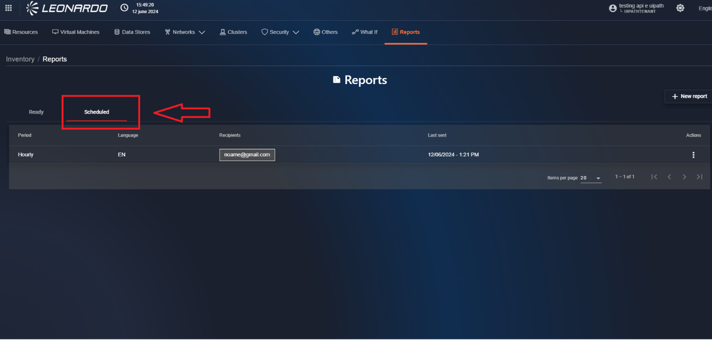
Figura - Lista dei report schedulati
In questa pagina troviamo la lista e le relative informazioni dei report schedulati presenti nel sistema, per ogni risultato è possibile, cliccando il pulsante “Tre punti” sulla destra sarà possibile effettuare tre operazioni:
-
Visualizzare l’ ultimo report generato (Figura 132)
-
Editare le impostazioni della schedula, non sarà possibile modificare i provider o sottosistemi selezionati (Figura 131)
-
Eliminare la schedula per interrompere l’invio delle e-mail

Figura - Modifica di una schedula
Utilizzo dei report
Cliccando sulla riga di un report statico, o utilizzando il pulsante “Show report” disponibile per i report schedulati sarà possibile visualizzare la pagina di dettaglio del report selezionato (Figura 132)
All’interno del sommario del report dell’Inventory è presente la sezione “Stats” in cui sono presenti il numero dei dischi, delle interfacce, delle reti e delle virtual machines appartenenti al provider selezionato.
Sotto la sezione “Stats”, sono presenti i filtri usati dall’utente per generare il report.
Sotto i filtri, è presente la tabella riassuntiva delle risorse appartenenti ai provider. A destra sono presenti due pulsanti: “PRINT” ed “EXPORT”.
Cliccando sul pulsante “PRINT”, appare una modale di anteprima della stampa. Per stampare il report, cliccare sul pulsante in basso a destra “Stampa”, a questo punto si avvierà la stampa del suddetto.
Cliccando sul pulsante “EXPORT”, è possibile esportare il report in formato “.csv”, “. json” o “.pdf”.
Per tornare al tab “Results”, in basso a destra, cliccare sul pulsante “CLOSE” oppure in alto a sinistra cliccare sulla freccia che punta verso la sinistra, accanto al titolo del report.
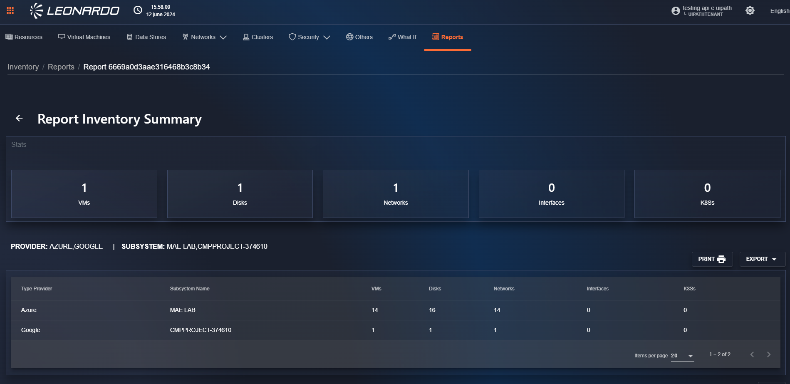
Figura - Dettagli dei report